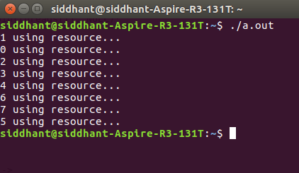

对于N过程的一般情况， Bakery算法是对于互斥问题最简单的已知解决方案之一。 烘焙算法是N个过程的关键部分解决方案。 该算法保留了先到先服务属性。
- 在进入其关键部分之前，该过程会收到一个数字。 最小数字的持有者进入临界区。
- 如果进程Pi和Pj收到相同的数字，
if i < j Pi is served first; else Pj is served first.
- 编号方案总是以递增的顺序生成数字; 即，1,2,3,3,3,3,4,5 ......
符号 -词典顺序（票号＃，进程号码＃） - 首先比较票号。 如果相同，则接下来比较过程ID，即 -
– (a, b) < (c, d) if a < c or if a = c and b < d – max(a [0], . . ., a [n-1]) is a number, k, such that k >= a[i] for i = 0, . . ., n - 1
共享数据 - 选择是布尔值的数组[0..n - 1]; ＆number是整数值的数组[0..n - 1]。 两者分别初始化为False和Zero 。
算法伪码 -
repeat choosing[i] := true; number[i] := max(number[0], number[1], ..., number[n - 1])+1; choosing[i] := false; for j := 0 to n - 1 do begin while choosing[j] do no-op; while number[j] != 0 and (number[j], j) < (number[i], i) do no-op; end; critical section number[i] := 0; remainder section until false;
说明 -
首先，该过程将其“选择”变量设置为TRUE，表示其意图进入临界区。 然后为其分配与其他进程对应的最高票号。 然后“选择”变量设置为FALSE，表示它现在有一个新的票号。 这实际上是算法中最重要和最令人困惑的部分。
它本身实际上是一个小的关键部分！ 前三行的目的是，如果进程正在修改其TICKET值，那么此时不应允许其他进程检查其旧票证值，该值现已过时。 这就是为什么在检查票证值之前在for循环中我们首先确保所有其他进程都将“choose”变量设置为FALSE。
之后，我们继续检查进程的票证值，其中具有最少票号/进程ID的进程进入关键部分。 退出部分只是将票证值重置为零。
Code -这是Bakery算法的C代码实现。 在UNIX环境中运行以下命令 -
// Importing the thread library
#include "pthread.h"
#include "stdio.h"
// Importing POSIX Operating System API library
#include "unistd.h"
#include "string.h"
// This is a memory barrier instruction.
// Causes compiler to enforce an ordering
// constraint on memory operations.
// This means that operations issued prior
// to the barrier will be performed
// before operations issued after the barrier.
#define MEMBAR __sync_synchronize()
#define THREAD_COUNT 8
volatile int tickets[THREAD_COUNT];
volatile int choosing[THREAD_COUNT];
// VOLATILE used to prevent the compiler
// from applying any optimizations.
volatile int resource;
void lock(int thread)
{
// Before getting the ticket number
//"choosing" variable is set to be true
choosing[thread] = 1;
MEMBAR;
// Memory barrier applied
int max_ticket = 0;
// Finding Maximum ticket value among current threads
for (int i = 0; i < THREAD_COUNT; ++i) {
int ticket = tickets[i];
max_ticket = ticket > max_ticket ? ticket : max_ticket;
}
// Allotting a new ticket value as MAXIMUM + 1
tickets[thread] = max_ticket + 1;
MEMBAR;
choosing[thread] = 0;
MEMBAR;
// The ENTRY Section starts from here
for (int other = 0; other < THREAD_COUNT; ++other) {
// Applying the bakery algorithm conditions
while (choosing[other]) {
}
MEMBAR;
while (tickets[other] != 0 && (tickets[other]
< tickets[thread]
|| (tickets[other]
== tickets[thread]
&& other < thread))) {
}
}
}
// EXIT Section
void unlock(int thread)
{
MEMBAR;
tickets[thread] = 0;
}
// The CRITICAL Section
void use_resource(int thread)
{
if (resource != 0) {
printf("Resource was acquired by %d, but is still in-use by %d!\n",
thread, resource);
}
resource = thread;
printf("%d using resource...\n", thread);
MEMBAR;
sleep(2);
resource = 0;
}
// A simplified function to show the implementation
void* thread_body(void* arg)
{
long thread = (long)arg;
lock(thread);
use_resource(thread);
unlock(thread);
return NULL;
}
int main(int argc, char** argv)
{
memset((void*)tickets, 0, sizeof(tickets));
memset((void*)choosing, 0, sizeof(choosing));
resource = 0;
// Declaring the thread variables
pthread_t threads[THREAD_COUNT];
for (int i = 0; i < THREAD_COUNT; ++i) {
// Creating a new thread with the function
//"thread_body" as its thread routine
pthread_create(&threads[i], NULL, &thread_body, (void*)((long)i));
}
for (int i = 0; i < THREAD_COUNT; ++i) {
// Reaping the resources used by
// all threads once their task is completed !
pthread_join(threads[i], NULL);
}
return 0;
}
输出：
